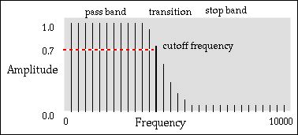
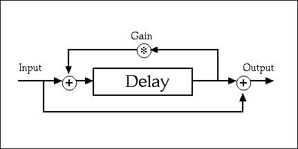
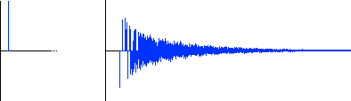

Filtering and Delay
Digital Filtering
A filters boosts or reduces (attenuates) the amplitude of certain frequencies in a signal. Several types of filters are commonly used in audio processing:
- A low-pass filter attenuates higher frequency components relative to lower ones.
- A high-pass filter attenuates lower frequency components relative to higher ones.
- A band-pass filter passes a range of frequency components through and attenuates the rest. The pass range is ususally described in terms of a center frequency and a bandwidth.
- A band-reject filter rejects a range of frequency components and allows the others to pass through.
- A comb filter alloes multiple frequency ranges to pass through and attenuates the rest.
The portion of the spectrum that the filter does not attenuate is called the pass band of the filter. The portion that is attenuated (or not boosted) is called the stop band. In a perfect world the pass band and the stop band of a filter would be sharply delimited, but in fact filters always transition from one band to the other. Some point along this transition curve is designated to be the cutoff frequency, the point in the spectrum at which the signal's power has been reduced to half its value, or -3 dB. The half-power cutoff value is sometime expressed as a .707 amplitude value (since power ranges with the square of the amplitude, .707^2 = .5 = half-power attenuation).
The perceived effect of a filter will vary greatly depending on the spectrum of the input signal. For example, applying a low-pass filter to a signal with no high frequencies will have no percievable effect. The natural freuency of a comb filter will not "ring" if the signal does not contain components near that frequency. In order to work effectivly with filters the composer must first understand the spectral makeup of the input signal and then be prepared to experiment with various filter parameters to achieve optimal results.
Example 1. The pass band, cutoff frequency and stop band of a low-pass filter.
A band-pass filter has two cutoff frequencies, one on either side of a single pass band whose characteristices are determined by the filter's center frquenency and bandwidth. The ratio of the center frequency to the bandwidth is called the filter Q and determines how resonant the filter is around the center frequency. A filter with a high Q is tightly focused and will resonate, or "ring" near the center frequency more than a filter with a low Q. Band-pass filters also have a gain factor that determines the total amplitude of the resonance. The gain on a filter that employs a feedback loop (a comb filter, for examnple) must always be less than 1.0 or else filter's output will eventually overflow and cause distortion in the output signal.
Filter Response Time
A filter works by controlling the rate of change between samples of the signal passing through it. Higher frequencies have faster rates of change than lower ones which means that the slope or differences between sample values are larger for higher frequency than for slower frequencies. If a filter only permits a certain maximum rate of change to flow through then the amplitudes of the output samples will be altered for any rates above that limit in the input signal. This affects the spectrum because the maximum rate of change the filter allows determines the maximum slopes that output waveforms can possess. The cutoff frequnecy determimes the maximum slope that the filter. All filters have a time response that is inversly proportinoal to the "width" of the filter in the frequency domain. That is, if the filter is exact, or sharp, in the frequency domain then is inexact in the time domain: the more narrow the filter, the longer it will "ring". The more "narrow" the filter the lesser the rate of change, which means that the "amplitude envelope" of the output signal will vary more slowly over time.
Frequency and Impulse Response
A graph such as the one shown in Example 1 is called an amplitude vs frequency response curve, it depicts the effects of a filter in the frequency domain. Every type filter has its own characterisitc freqeuncy reponse curve and the names of the most common filter types (low-pass, comb, etc) indicate the general shape of their response. To measure frequency response an input signal of white noise is used because white noise contains all frequencies at equal ampliutudes thus allowing the effects of the filter on the ouput spectrum to be visible over the entire frequency range.The impulse response (IR) of a filter is a measurement of the output signal's amplitude in the time domain. To observe the inpulse response a single sample containing all frequencys at maximum amplitude, called the unit impulse is input into the filter and the output signal is measured over time. According to Fourier's theorem, a single frequency, or sine wave, has infinite duration. Shorter signals may be created by adding sine waves together such that they cancel out at a certain points to create signals of a specific duration. The shorter a signal's duration, the more sine waves must be added together, and hence, the wider its spectrum. In the digital domain a one sample signal contains all the frequencies below the Nyqiust limit.
Digital filter descriptions
A digital filter is an algorithm whose output spectrum differs from its input stream. Since just about the only requirement for a filter is that it operate on inputs and outputs almost any piece of software can be considered to be a filter! This includes many common processing effects such as delay, chorus, flanging and reverberation.
Digital filtering is performed on a series of indexed samples. For example, for an input signal x then x(n) would denote the current input sample and x(n-1) references thee last (previous) input sample. The filter order indicates how many past values involved in the calculation of an output sample. Filter equations are typically expressed as a series of indexed samples that are added, subtracted and scaled by filter coefficients. Sample terms can reference the input or the output signal of the filter. In filter descriptions the input signal is often named x while y is used to designate the output signal. Filter coefficients are named in a simiar manner: a coeffients are applied to the input signal and b coefficients apply to the output signal.
An filter that references only input terms in the calculation of the output signal is called a feed-forward filter. Such filters are also called finite impules response (FIR) filters because their impulse reponse is guaranteed to reach zero after a finite period of time.
If a filter references past output values in its calculation of the next output it is called a recursive, or feed-backward filter. Such filters have an infinite impulse response (IIR) because the output may never reach zero. In fact, the gain factor for an IIR filters must always be less then 1.0 or else the filter will produce amplitude overflow at some point. IIR filters can produce sharp, exponentially shaped response curves. Their drawback is that the recursivce "memory" can produce a ringing sound on transients.
As an example of a simple digital filter consider the following equation for an averaging low-pass filter:
y(n) = .5*x(n) + .5*x(n-1)
This equation implements a low pass filter because averaging has a greater effect on numbers with high rates of change than on numbers with a low rate of change. For example, if .4 and .6 are averaged the result is .5, a value close to both input numbers. However, .1 and .9 also average to .5 but output value is not close to either input. The equation "smoothes out" larger rates of change much more than smaller ones.
A more general description of the low-pass filter shown above is:
y(n) = a0*x(n) + a1*x(n-1)
where a0 and a1 are coefficients, or scalars, on the input signal. We can use these same terms and coefficients to describe a high-pass filter:
y(n)= a0*x(n) - a1*x(n-1)
This example acts as a high-pass filter because subtraction has more effect on values close to one another than on values with higher rates of change. For example the input samples .4 and .6 become .2 in the output, while the inputs .9 and .1 produce .8 as the output.
Filtering in CLM
CLM provides a number of different CLM generators related to filtering. The most basic of these is the one-zero, generator, whose equation is:
y(n) = a0 x(n) + a1 x(n-1)
Note that by providing different coefficients the one-zero generator can implement both the low-pass and high-pass examples discussed in the previous section. We can demonstrate this by designing a little instrument that uses one-zero to filter a noisy input signal:
filt.ins A simple noise filtering instrument.
(definstrument filt-noise (start dur amp a0 a1)
(let* ((beg (seconds->samples start))
(end (+ beg (seconds->samples dur)))
(flt (make-one-zero :a0 a0 :a1 a1))
(noi (make-rand-interp :frequency (* .5 *srate*))))
(run
(loop for i from beg to end
do (outa i (* amp (one-zero flt (rand-interp noi))))))))
If the a1 coefficient is 0 then no filtering occurs. If
a0 and a1 are less than 1.0 then low-pass
filtering is described, if a1 is less than 0.0
then filt-noise performs high-pass filtering.
Example n. Listening to unfiltered, low-pass and high-pass noise:
? (with-sound () (filt-noise 0 2 .2 1 0)) "test.aiff" ? (with-sound () (filt-noise 0 2 .2 .5 .5)) "test.aiff" ? (with-sound () (filt-noise 0 2 .2 1 -1)) "test.aiff"
CLM provides a number of different generators related to filtering. The most most general of theses are:
We can use envelope->coeffs and a FIR filter to place
an arbitrary frequency response envelope on a sound source:
filtenv.ins Appying filter envelope to a sound source.
(definstrument filtenv-noise (beg dur amp order env)
(let* ((beg (seconds->samples beg))
(end (+ beg (seconds-samples dur)))
(noi (make-rand :frequency (* .5 *srate*) :amplitude amp))
(flt (make-filter :xcoeffs (envelope->coeffs :order order :envelope env)))
(run
(loop for i from beg to end
do (outa i (filter flt (rand noi)))))))
Example n. Filtering with a spectral envelope.
(defparameter fltenv '(0 0.0 .125 0.5 .2 0.0 .3 1.0 .5 0.0 1.0 0.0)) (with-sound () (filtenv-noise 0 1 .2 12 env))
The CLM distribition contains several noise filtering instruments:
Delay
When a signal is delayed it is only mixed into the output after first waiting a specified period of time. In a typical delay line a feedback loop is used to reroute a portion of the delayed signal back into the delay again, which provides an efficient mechanism for implementing multiple delays of the same material. The feedback process is controlled by a gain factor that attenenuates the signal each time it is delayed. The speed at which the signal attenuates depends both on the gain and the delay time. A gain factor less than 1.0 causes the delayed material to diminsih in amplitude over time until its effect dissapears into the background noise. Gains greater than 1.0 will cause the signal's amplitude to become unstable and overflow at some point.
| Example 3. A basic delay unit with feedback loop. |
|  |
Delays are implemented using delay-lines. A delay-line is a buffer of length n samples into which a signal flows and then reappears n sample periods later. Each time a sample is input into the delay-line it "pushes" the current contents in the line one more location toward the end. Since input and output from the delay line happens each sample period it takes n/srate seconds for a delayed sample to reappear. One can determine the delay-line length needed to produce a particular delay time by multiplying the sampling rate by the delay time. The function seconds->samples can be used to convert time to a delay line length. The function keynum->samples (delaysnd.ins) converts a keynum or note name into its period length (in samples) for tuning the "natural frequency" of the delay line.
As of yet we have considered reading samples from the end of the delay-line. But in reality a sample can be read from any location along a delay-line. Reading samples from a delay-line is called tapping, and the positions in the delay-line from which samples are read are called taps. The closer a tap is to the front of the delay-line the less delay time will have occured when the signal reaches that tap position. By using a moveable tap a single delay-line can represent a variety of delays at the same time. This is called variable length delay. By "sweeping" a tap between a minimum and maxumum delay length the delay-time will evolve over time as the distance of the tap grows and shrinks. The sweeping mation can be controlled by an envelope or by a low frequency oscillator, or LFO.
The delaysnd instrument impelements a movable, recursive delay line with controls on feedback gain, ring time and ratio of delayed to non-delayed signal.
delaysnd supports the following parameters:
- time number
- Start time of note in seconds.
- file string
- Sound file to process.
- length number
- The length of the delay line in samples. Use the delay-length function to convert time or frequency to delay length.
- input-file-start-time number
- Start time in file to begin processing.
- duration number
- Duration of sound file to delay. Defaults to the entire sound file.
- amplitude number
- Amplitude scaler on sound file. Defaults to 1.0.
- amp-env list
- Envelope on amplitude.
- delay-mix number
- Ratio of delayed signal to direct. 1.0 is all delayed signal and 0.0 is all direct. Defaults to .5.
- gain< number
- Amplitude scaler on feedback term. Defaults to .5.
- decay-time number
- The amout of time the delay should "ring" past the end of the sound file.
- max-length number
- The maximum length of the delay. Defaults to length.
- delay-env list
- Envelope on tap between length and max-length
- flange-rate list
- Rate of flanging oscillator.
Example 2. Simple delay effects.
? (insure-io "test.aiff" :srate 44100 :channels 2) #<audio-file: "test.aiff"> ? (events (new delaysnd time 0 file "320:snd;crotales;a6.aiff" length (delay-length .25 )) "test.aiff" :srate 44100 :channels 2) "test.aiff" ? (events (new delaysnd time 0 file "320:snd;crotales;a6.aiff" length (delay-length .25 ) max-length (delay-length 1) delay-env '(0 0 100 1) decay-time 4) "test.aiff") "320:zap;test.aiff"
Comb Filtering
The comb filter is a simple recirculating delay line with gain control on the feedback term. The inpulse response of a comb filter is a train of pulses spaced the length of the delay line apart in time. Because this impulse is periodic the comb filter is said to have a frequency. This frequency is called the natural frequency of the comb filter and is equal to the sampling rate divided by the length of the delay line. For example, the natural frequency of a .001 second delay is 1/.001 or 1000 Hertz, which at a sampling rate of 44100 corresonds to a delay-line length of 4410 samples. The characteristic of the comb filter is to emphasize multiples of the natural frequency and to attenute other frequencies due to phase-cancellation from the feedback loop. This phase-cancellation at multples of the natural frequency creates the characteristic "notches" in the frequency response that resemble the teeth of a comb.
Example 2. Comb effects. The first example applys an amplitude envelope to the file and resonates at its "natural frequency" of A4, or 440 Hz. The second example performs a glissando from C5 to A4.
? (events (new delaysnd time 0 file "wind-gusting-cold.aiff" length (delay-length 'a4) amplitude .5 amp-env '(0 1 .5 .4 .7 .1 1 0) delay-mix 1 gain .9 ) "test.aiff") "test.aiff" ? (events (new delaysnd time 0 file "wind-gusting-cold.aiff" length (delay-length 'c5) max-length (delay-length 'a4) amplitude .5 delay-mix 1 gain .9 delay-env '(0 0 100 1) decay-time 2) "test.aiff") "test.aiff"
Flanging
The flange effect occurs when a signal is added to a slightly delayed version of itself. Typical delay times for flanging are between 1 to 10 milliseconds. To flange the signal the amount of delay is made to oscillate between a minimum and maximum length at slow rate called the flange rate Modulation can be implemented by an oscillator generating a sinewave or triangle wave at a low frequency. Because delay time in flanging are so short no "echo effect" in the delay is heard. Instead, flanging produces a filtered "whooshing" sound that is caused by phase cancellation brought about by the feeback in the signal. As is the case with the comb filter the frequency respose of a flanger is a series of notches in the spectrum. The first example has a flange delay of 1-5 millisecond and a flange rate of .25 herz. The second example creates a noise using a high flange rate. The third example uses longer delays of 30-50 millisecond and no feedback to create a chorus effect.
Example 3. Comb effects. The first example applys an amplitude envelope to the file and resonates at its "natural frequency" of A4, or 440 Hz. The second example performs a glissando from C5 to A4.
(insure-io "test.aiff" :channels 1 :srate 22050) #<audio-file: "test.aiff"> ? (events (new delaysnd time 0 file "oboe.aiff" length (delay-length .001) max-length (delay-length .005) flange-rate .25 delay-mix 1 gain .9 decay-time .5) "test.aiff") "test.aiff" ? (events (new delaysnd time 0 file "oboe.aiff" length (delay-length .05) max-length (delay-length .10) flange-rate 25 delay-mix 1 gain .9 decay-time 2) "test.aiff") "test.aiff" (events (new delaysnd time 0 file "oboe.aiff" length (delay-length .03) max-length (delay-length .035) flange-rate 1 gain 0) "test.aiff") "test.aiff"
Convolution
Convolution is the "cross-product" result of mutiplying every sample of a source sound by every sample of a filtering sound. This effectively adds the charactistics of the "filter" sound to the source. To see why this is so, consider what happens when you clap your hands in a reverberant environment. A very short handclap serves as an impulse into the reverberant surroundings. If you were to graph that inpulse over time, it might look something like this:
Example n. Impulse response of a reverberant room.
Givin an initial inpulse there is a build-up of sound "density" at the beginning followed by a smooth decay toward zero. In the digital domain, it's easy to realize that each sample point of the response can be viewed as a discrete echo of the impulse. Since, ideally, the impulse is a single non-zero sample, it's not a stretch to realize that a series of samples -- a sound played in the room -- —would be the sum of the responses of each individual sample at their respective times In other words, if we have a digitized impulse response, we can easily add that exact room characteristic to any digitized dry sound. Multiplying each point of the impulse response by the amplitude of a sample yields the room's response to that sample; we simply do that for each sample of the sound that we want to "place" into that room. This yields a bunch -- as many as we have samples -- of overlapping responses that we simply add together. Unfortunately, convolution is extremely expensive computationally if it is done by "brute force" multiplication and addition. Since each sample of the input is multiplied individually by each sample of the impulse response and then added to the mix, then if we have n samples to process, and the impulse response is m samples long, we need to perform n+m multiplications and additions. So, if the impulse response is three seconds (a big room), and we need to process one minute of music, we need to do about 350 trillion multiplications and the same number of additions (assuming a 44.1KHz sampling rate).
Example 2. Convolution of two sound files.
(with-sound (:statistics t :srate 44100 :channels 2)
(cnvrev "/Users/hkt/Music/Sounds/percussion/large-gong.aiff"
"/Users/hkt/Music/Sounds/percussion/claves.aiff"
.9))
(with-sound (:statistics t :srate 44100 :channels 1)
(cnvrev "/Users/hkt/Music/Sounds/percussion/large-gong.aiff"
"/Users/hkt/Music/Sounds/Flute/ff/c4.aiff"
.5))
You can find various impulse responses on the net, For example, http://www.cksde.com/p_6_250.htm.